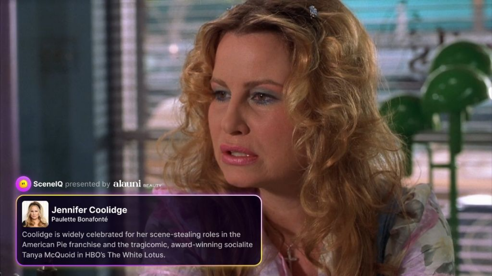
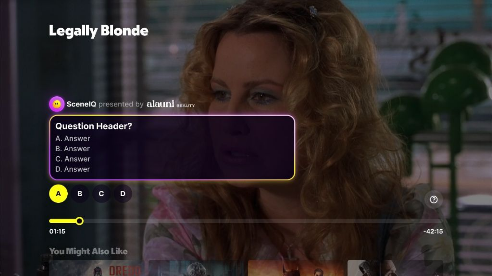
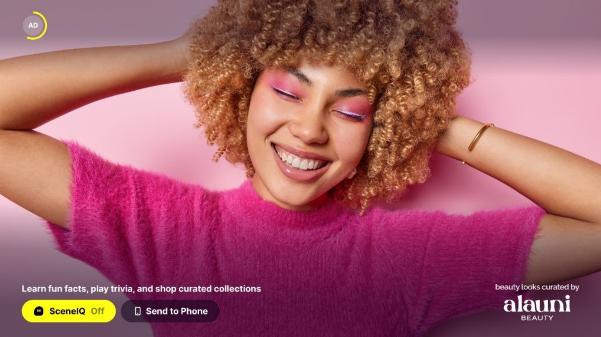
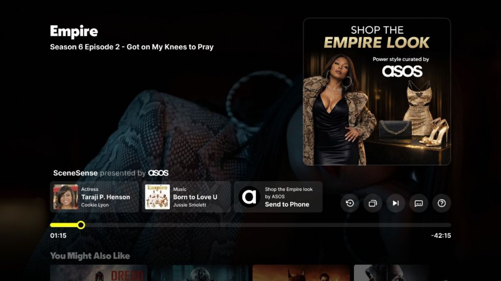

Viewers notice actors, songs, objects, places, trivia, and “is that real?” moments while watching. Today, most of that intent disappears before it can improve discovery, personalization, or monetization.
People leave the player, search on their phone, or do nothing. The product misses a moment of high engagement.
A play only says what title ran. It does not say which actor, object, topic, brand, or scene actually mattered.
Ads and partners want high-intent audiences, but the player rarely captures the signals that reveal that intent.
Contextual prompts appear at the right moment in the player: actor facts, trivia, realism checks, scene facts, and follow-up actions.

Contextual actor prompts turn a familiar face into exploration, follow-ups, and title discovery.

Scene-anchored questions create lightweight interaction without leaving playback.

Partner moments can be presented as optional actions, not interruptive ad units.
The architecture is simple at the surface, but strict behind the scenes: every prompt is generated from a known capability and checked before output.
Music, cast/actors, locations, themes, cuepoints, scene context, and wiki context from the VLM payload.
Parallel pipelines create actor, trivia, realism, and factual prompts from the right source capability.
URL provenance, source quality, quote match, MCQ checks, dedup, scoring, and optional eval re-fetch.
UI bundle, audit evidence, review scorecard, and prompt surfaces ready for the player.
Interaction data can improve prompt ranking, recommendations, profiles, and partner intelligence.
Only prompts with acceptable source evidence and scorecard results move forward.
UI contract plus audit evidence for review, QA, and downstream use.
Engagement creates structured features for ranking and personalization.
A title play is coarse. Prompt interactions can expose the entity, topic, and action-level intent inside the viewing session.
Actor prompt opened, follow-up tapped, or adjacent title explored. Useful for recommendations and profile enrichment.
Trivia or realism prompts reveal interest in law, medicine, sports, history, cars, fashion, or places.
Cars, outfits, songs, locations, props, and partner categories become structured intent signals.
Answering, saving, sending to phone, or jumping to another title shows more than passive watch time.
The same scene intelligence can support utility, discovery, and partner experiences without leaving the player.
A partner can sponsor a contextual prompt without interrupting playback or breaking the viewer’s attention.

Scene context can hand off product, title, or partner actions to mobile when the viewer wants to continue.
A strong pilot should measure user value, system trust, recommendation signal quality, and partner monetization potential.